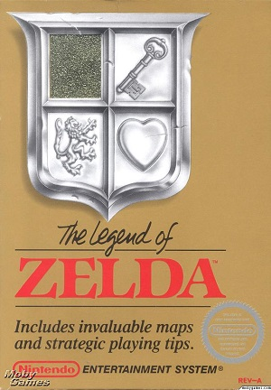

Retro-Spective
Legend of Zelda
The Legend of Zelda is a fantasy action adventure from Nintendo where you take on the role of Link, "the playable protagonist". The game was released in 1986 and has been incredibly popular since, selling millions of copies. The game is set in the fantasy world of Hyrule, which has been thrown into chaos by the antagonist of the game, Ganon, who stole a piece of the Triforce, an artefact of great power. Link must battle his way through Hyrule in order to collect the pieces of the Triforce, save the kingdom, and save the princess, Zelda by defeating Ganon.
